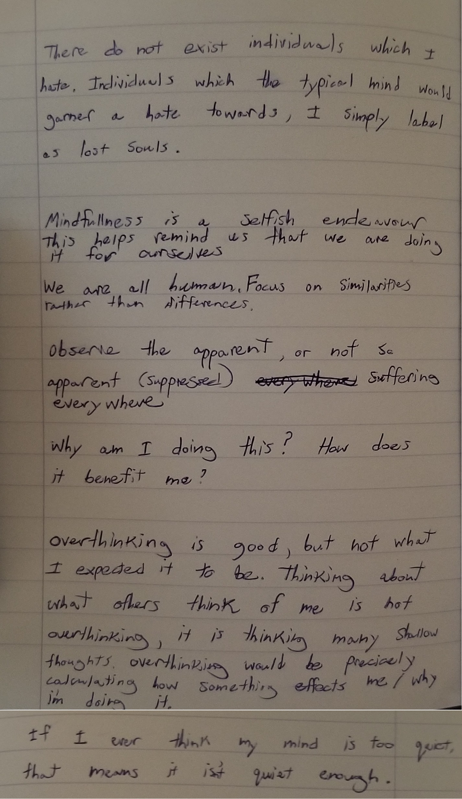
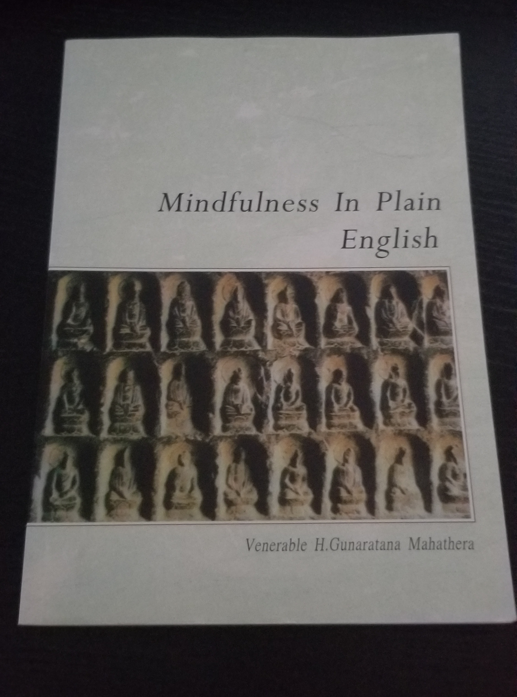
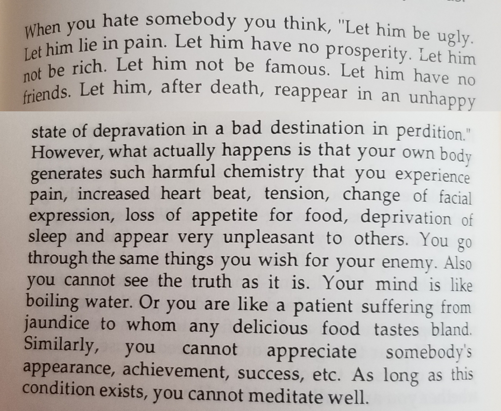

I have an unhealthy habit beliving that these things around me and I myself too are permanent. When I give it a bit of thought obviously this tendency is swept away by the fact that I will die one day. But I don't do this on a subconcious level so unless I'm actively thinking about death things which I own are interpreted as forever mine by my brain. It leads me to grow attached to many objects which only serve to clutter my life. It leads me to grow attached to my life as well, which I think is a scary optic because we all know our lives aren't ours to keep. Buddism has helped remind me that I don't own anything, everything which I thought I "owned" I'm actually just renting until my death.
Buddism
Below is a good Explanation of Buddism in a Nutshell by URI.org
About 2500 years ago, a prince named Siddhartha Gautama began to question his sheltered, luxurious life in the palace. He left the palace and saw four sights: a sick man, an old man, a dead man and a monk. These sights are said to have shown him that even a prince cannot escape illness, suffering and death. The sight of the monk told Siddhartha to leave his life as a prince and become a wandering holy man, seeking the answers to questions like "Why must people suffer?" "What is the cause of suffering?" Siddartha spent many years doing many religious practices such as praying, meditating, and fasting until he finally understood the basic truths of life. This realization occurred after sitting under a Poplar-figtree in Bodh Gaya, India for many days, in deep meditation. He gained enlightenment, or nirvana, and was given the title of Buddha, which means Enlightened One.
What did Buddha teach?
Buddha discovered Three Universal Truths and Four Noble Truths, which he then taught to the people for the next 45 years.
Three Universal Truths
1. Everything in life is impermanent and always changing.
2. Because nothing is permanent, a life based on possessing things or persons doesn't make you happy.
3. There is no eternal, unchanging soul and "self" is just a collection of changing characteristics or attributes.
Four Noble Truths
1. Human life has a lot of suffering.
2. The cause of suffering is greed.
3. There is an end to suffering.
4. The way to end suffering is to follow the Middle Path.
There are also guildlines on how to reach Nirvana (The Eightfold Path); however, I won't explain that here because I don't practice the religion, I only think their truths are very enlightening to be reminded of periodically.
What Buddhism/mindfullness is to me
I am now refactoring my outlook on Buddhism/mindfullness. Of Buddhism I do not expect to be given purpose. (And yes I do feel that prupose is something I wish to have in life; maybe my mind will change as I grow however). *My* purpose is something I must decide on my own (they are listed under the goals tab). The aforementioned two should simply be used as tools to aid me in my journey to carry out my purpose.
Misc
Sitting still is a skill. I always attribute my struggle in sitting still on a lack of comfort. Comfort however, is acheivale irrespective of physical discomfort (with the exception of extreemes like thirst, the need to urinate, numbnes, or strain). Things like sweat, heat, humidity don't actually inhibit your comfort unless you allow them to. In other words, without the proper mindset comfort can become unacheivable.

This is effectively my handbook.


Distill emotions from what causes them. Identify the emotion, then examine it and its cause independantly. Understand the emotion. This allows you to exist above your emotions. I can't put into words why exactly this is good, but i'm certain that it promotes mindfullness somehow.